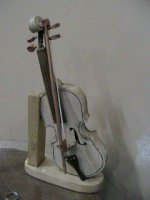
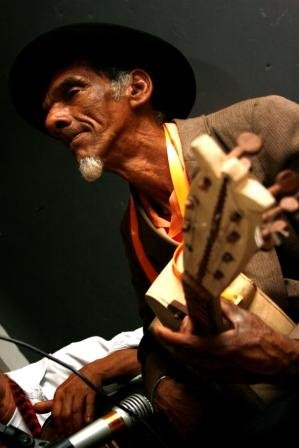

Página inicial > Fandangueiros > Leonildo Pereira

quinta-feira 17 de maio de 2012, por

Leonildo Fidelis Pereira toca rabeca e viola, além de construir instrumentos. Nasceu em Araçaúba, município de Cananéia, em 1942, mas só foi registrado no ano seguinte.
É filho de Vicente José Pereira e Maria Augusta Pereira e neto de João Bento Franklin Pereira de Assunção e Isabel Cordeiro da Costa. Com apenas quinze dias, foi morar com a família em Rio dos Patos e lá viveu por mais de cinqüenta anos.
“Com idade de oito anos, eu encostei no meu pai para aprender a tocar o fandango. E de mais, tinham os violeiros daqui mesmo, aqui no Paraná, tinha violeiro bom, violeiros mesmo, daqueles que hoje já morreram pras pessoas.”
Em Rio dos Patos, Leonildo participava dos mutirões e fandangos que geralmente aconteciam aos sábados e se estendiam até a manhã do dia seguinte, na chamada domingueira.
“Não tinha hora de descanso, se seis ficavam pra lá, ficavam dançando e você via essa moçada, ou dez, porque tinha quarenta pessoas, quarenta homens naquele tempo de trabalho. Então, não acabava o fandango, até oito horas. Quando o patrão era bom, e que o povo gostava também, quando que ia amanhecendo ele fechava todas as portas, para que não visse o claro do dia, para o povo dançar é mais. Então quando eles já tavam cansados, ele abria a porta, era o quê? Oito, nove horas do dia. O fandango tava ali, mas o fandango era bonito! Hoje não tem fandango bonito que nem naquele tempo! O povo gostava, ninguém brigava, ninguém fazia nada.”
Leonildo aprendeu tocar e construir instrumentos de fandango com sua família. Toca viola utilizando a afinação chamada intaivada, a mais comum entre os tocadores de fandango de Rio dos Patos e de localidades vizinhas. Constrói instrumentos de cocho, como aprendeu com os antigos.
“Começou com o Seu Franklin, aí depois passou a fazer padrinho Julino, que é filho dele, tornaram a fazer também, aquelas violas meio encabuladas, o machete, mas faziam, tava valendo. Aí que o meu avô me deu uma bunda de viola, aqui na Rita mesmo, ele me deu, que eu sabia tocar viola, aí eu fiquei com aquela bunda de viola, tocando viola, saía pro fandango e levava aquela bunda de viola, não tinha outra. (...) Primeiro tinha meu avô Franklin, segundo tinha o meu avô Silvino, pelo lado da minha mãe, depois vinham os mais novos, que são já os filhos deles, que são os meus pais hoje, já tinha o Andrino, já tinha Julino, que é esse que mora ali [no Rio da Rita], tocador de viola. Mais esperto pra gostar de fandango era o Andrino, esse que morreu, foi meu professor. Tinha Paulo Bento, era do lado da minha mãe, Costa, tinha Francisco Bento, irmão de Paulo Bento, o tocador melhor de rabeca que eu vi, que por aqui não tinha, igual a ele não tinha. Tinha mais o Vitorino, irmão da minha mãe, também era um violeiro, mestre de romaria, o meu pai também era tocador de viola, cantava bem alto, mas eu gostava dele, eu sempre aprendi com ele.”
Leonildo, bastante respeitado pelo seu conhecimento das diversas marcas do fandango, é chamado de professor por outros fandangueiros.
“Essas modas tudo eu sei. As modas valsadas que eles deixaram muito hoje, agora, moda batida não se esquece, não esqueço, sempre fica na cabeça. O camarada pede, a gente já canta. Agora, as modas que a gente deixou, são as modas valsados, esses deixaram muito, até eu deixei, porque caber na cabeça da gente um tanto daqueles não é brincadeira.”
Depois que saiu de Rio dos Patos, Leonildo morou alguns anos no Varadouro. Teve dez filhos, entre eles Aguinardo, que nasceu em Rio dos Patos, em 1974. Aguinardo é seu único filho que aprendeu a tocar fandango. Atualmente Leonildo mora no Abacateiro, pequena localidade perto de Vila Fátima, em Guaraqueçaba. Leonildo Pereira é o mestre do grupo Família Pereira, que já lançou dois CDs: “Viola Fandangueira”, de 2002, e “Fandango de Mutirão”, de 2003.
Além das apresentações com o grupo, com freqüência é convidado para ensinar fandango em oficinas realizadas principalmente em Curitiba.
“Isso pra sair pra fora foi quase um sonho, realizado um sonho que jamais você diria ver. Conhecer São Paulo, conhecer Curitiba, você nunca iria pensar em outra idéia.“Viemos aqui, vir pra chamar vocês pra nós gravar”. Fiquei meio tremendão, aí não teve coisa, disse: “Como? Gravar, gravar o quê?” Gravar, aquilo a gente grava, mas sabe lá, a gente ia pra gravadora, sei lá o que é essa tal gravadora. Fomos pra lá. Chegamos lá, e se apronta e vai, entra pra dentro lá. (...) Pra falar era só por aceno pros outros. Começamos a gravar, uma, duas modas, descansa um pouquinho, vamos ver o que é que valeu. Disse:“Está valendo!” E se está valendo, então, vamos até o fim com uma gravação dessas. Nós nunca chegamos aqui e já está valendo. Não estamos errando, então, vou dar de tudo. (...) Daqui a esperança de mais ainda, mais gravação, porque depois a gente morre e fica aí menos história pra escutar...”
Leonildo Pereira é um dos fandangueiros que mais circula pela região, participando com freqüência de fandangos realizados em Barra de Superagüi, Vila Fátima e Barra do Ararapira, comunidades da Ilha do Superagüi.
Fonte: Museu Vivo do Fandango